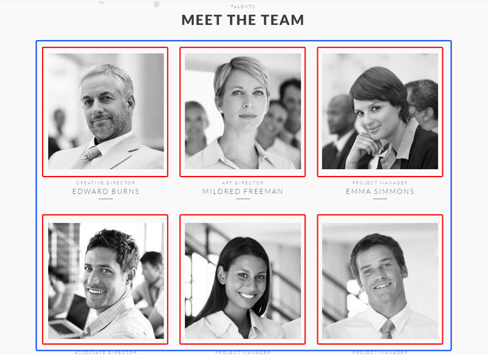

3. Omni 8.x Feature Setup
Introduction
Thank you for purchasing ESORS's Drupal theme - Omni. Omni Feature Setup guide will cover some key features of Omni theme.
If you are a Drupal beginner, we wrote a short tutorial to help you find your way around Drupal. If you already know Drupal, please complete Basic Setup first before start with this Feature Setup.
After install Sample Content, user can click on Edit button on top right corner. It will show edit option for each individual block, user can quickly see how each block being setup.
For support, you can contact us through themeforest.net. We will respond within 24hrs.
Table of Content
-
Menu
- Main navigation
- Main navigation mobile
- Secondary menu
-
Showcases
- Basic
- Heading
- Heading Alternative
-
Custom Block
-
Views
-
Contact Form
-
Menu
- Main navigation
- Main navigation mobile
- Secondary menu
-
Showcases
- Basic
- Heading
- Heading Alternative
- Custom Block
- Views
- Contact Form
Showcase
Omni Portfolio offer three Showcase styles with easy setup steps. By using two new Block types: Showcase and Showcase Element, user can quickly create Showcase just like to create any other blocks. There is also a Showcase block region for placing showcase block.
- Understand Showcase and Showcase Element block type
- Showcase: contain basic Showcase setting. It also contain multiple Showcase Element.
- Showcase Element: contain actual image, slide title, link, caption etc.
Each Showcase Element act like slide and Showcase act like container that glue slides together.
1. Main
- Requirement:
- Complete General setting.
- Images size normally 1920px X 1000px as background.
- Pattern
- Filter
- Optional:
- Link
- Skip:
- Category
- Suitable regions: Showcase region only
2. Heading

- Requirement:
- Complete General setting.
- Images size normally 1920px X 400px as background.
- Pattern
- Filter
- Optional:
- Link
- Skip:
- Category
- Suitable regions: Showcase region only
3. Heading Alternative
- Requirement:
- Complete General setting.
- Images size normally 1920px X 400px as background.
- Pattern
- Filter
- Optional:
- Category
- Link
- Suitable regions: Showcase region only
Custom Block
In Omni Portfolio there are two types of block:
- Custom Block type
- Non-Custom Block type (system block, menu block, basic block etc.)
Omni Portfolio using Custom Block's merging feature to merge up to six other blocks' content together to get flexible layouts and styles.
To use Merging or Attachment feature, All Block must be published/placed first.
For example, User account menu is a Drupal 8 menus block which is a Non-Custom Block. If user want to merge User account menu block with other blocks. First it need to be published then attached to a Custom Block, last step to merge with others.

- Title

- Body
- General Setting
- Specific Setting
- Merging
The idea is to merge several blocks into one block by horizontal, tab, slider. Use it only when you want to merge blocks.
- Type: MUST select a correct merging type
- Horizontal Setting
- even width columns: checked by default or user can setup each column size by using Size option. All merged columns size in total should be 12. For example, four merged columns size can be 3+3+3+3 or 4+4+2+2
- equal height columns: force all merging blocks into same height. Required each individual block checked with this options.
- collapse: by default each merging blocks will have space in-between. Checking this box will collapse the gap.
- Attachment
The idea is to attach any blocks that have been published/placed into Block layout and turn it into Custom block so other Custom block can use it to merge.
- Pattern & Reveal
- Pattern allow user to change the block styles
- Subscription
- Team Member
- Blog Showcase
- Statistic
- Testimonial
- Tabs
- Stack on Small (auto image)
- Stack on Medium (auto image on small)
- Stack on Medium (100% image on small)
- Reveal: scroll & reveal feature. It allows blocks to appear on screen while scrolling.
- Enable
- Origin
- Speed
- Delay
- Distance
- Reset: replay when re-appear
Why Merging
Layout & style
To use Drupal 8 bartik theme as example, there are Featured bottom first, Featured bottom second, Featured bottom third, three Featured bottom regions. If we fill in all three Featured bottom regions then Featured bottom will always show as three columns layout. Unlike bartik, in Omni Portfolio there is only one Main bottom region. If user use Main bottom region with merging feature then Omni Portfolio can have one stack as three columns and put another merging stack below as four columns and so on. Each stack can have its' own background colors, background image, title, styles etc. Result Omni Portfolio can use much less block regions with more layout options and styles.
Why Attachment
Turn any block into Custom Block, So user can use Custom Block setting
Use Case
Demo meet the team
- Create 6 individual custom blocks & apply pattern as Team Member
- Publish all at Usable region
- Create a Custom block and use horizontal merge for all 6 Custom blocks into one.
- Publish it into a region

Views
- Omni custom block library
Omni custom block library provide an alternative view to Drupal 8 built-in Custom block library view. User can disable the Drupal original Custom block library view.
Omni custom block library view allow user to select block type and only display the specific block type content.
- Page & Path
Omni Portfolio has build-in view to display certain content type's node.
- Display all articles, path /article
- Display all portfolio, path /portfolio
- Display all blogs, path /blog
- Ready to use blocks
Omni Portfolio has many ready to use blocks. It can be found after click Place Block button at Block Layout. Type view into search box.
Contact Form
- Contact Form Block
Contact Form Block require Contact Block module installed & enabled. Go to Structure > Block Layout and click Place block button then search for Contact block and select Omni Custom contact form as Contact form option.
Copyright
The content of this document is copyrighted by ESORS.com. © 2008-2016 All rights reserved. No portion of the content may be directly or indirectly copied, published, reproduced, modified, performed, displayed, sold, transmitted, broadcast, rewritten for broadcast or publication or redistributed in any medium.